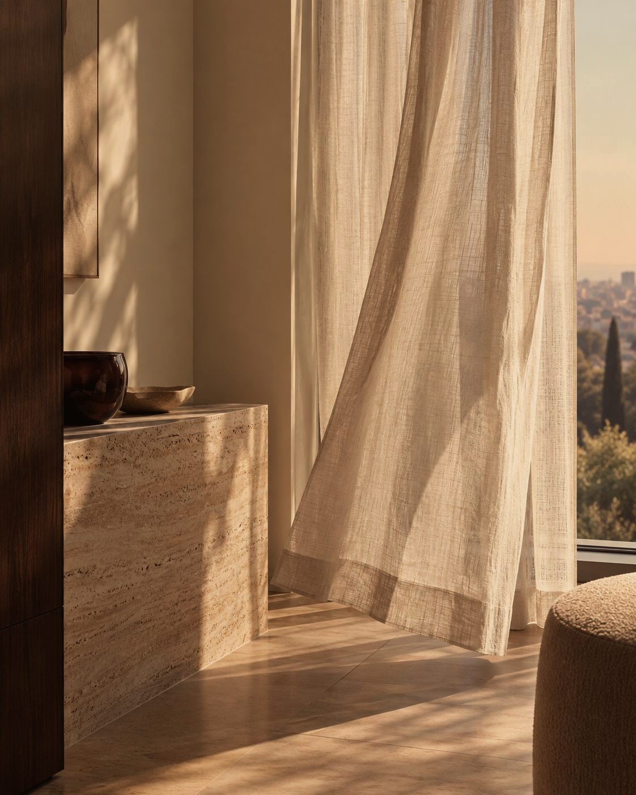

Estética con criterio
Cirugía plástica · Medicina estética
Explora
¿Qué zona quieres tratar?
Cirugía plásticaBlefaroplastiaMirada descansada: se trata el exceso de piel y las bolsas de los párpados.1 a 2 horas · Recuperación 7 a 10 días
Cirugía plásticaRinoplastiaArmonía entre la nariz y el rostro, cuidando también la respiración.2 a 3 horas · Recuperación 10 a 15 días
Cirugía plásticaLifting facial y de cuelloRejuvenecimiento profundo que reposiciona tejidos del rostro y el cuello.3 a 5 horas · Recuperación 2 a 3 semanas
Cirugía plásticaBichectomíaMejillas más definidas retirando parte de las bolsas de Bichat.30 a 60 minutos · Recuperación 3 a 5 días
Cirugía plásticaMentoplastiaUn mentón en proporción con la nariz y el perfil.1 a 2 horas · Recuperación 7 a 10 días
Cirugía plásticaOtoplastiaCorrige las orejas prominentes con cicatriz oculta detrás de la oreja.1 a 2 horas · Recuperación 7 días
Cirugía plásticaLipopapadaDefine el cuello y la línea mandibular retirando grasa de la papada.1 hora · Recuperación 5 a 7 días
Cirugía plásticaMamoplastia de aumentoMás volumen y mejor forma con implantes elegidos a tu medida.1,5 a 2 horas · Recuperación aprox. 1 semana
Cirugía plásticaMastopexiaLevanta y reafirma el seno, con o sin implantes.3 a 5 horas · Recuperación 2 a 3 semanas
Cirugía plásticaMamoplastia de reducciónSenos más livianos y proporcionados; alivio de espalda y cuello.3 a 4 horas · Recuperación 2 a 3 semanas
Cirugía plásticaRecambio o retiro de implantesActualiza, cambia de tamaño o retira tus implantes con seguridad.2 a 4 horas · Recuperación 1 a 2 semanas
Cirugía plásticaGinecomastiaPecho masculino más plano y definido.1 a 2 horas · Recuperación 7 a 10 días
Cirugía plásticaLiposucción y lipoesculturaDefine tu contorno retirando grasa localizada.2 a 5 horas · Recuperación 2 a 3 semanas
Cirugía plásticaLipotransferencia glúteaVolumen y forma en glúteos con tu propia grasa.3 a 5 horas · Recuperación 2 a 3 semanas
Cirugía plásticaAbdominoplastiaAbdomen plano y firme: piel, grasa y músculo.3 a 4 horas · Recuperación 2 a 3 semanas
Cirugía plásticaMini abdominoplastiaPara piel sobrante solo en la parte baja del abdomen.Aprox. 2 horas · Recuperación 10 a 14 días
Cirugía plásticaBraquioplastiaBrazos firmes, sin piel colgante.2 a 3 horas · Recuperación aprox. 2 semanas
Cirugía plásticaLifting de muslosMuslos más firmes tratando la flacidez interna.2 a 4 horas · Recuperación 2 a 3 semanas
Cirugía plásticaCirugía tras gran pérdida de pesoBody lift y cirugías para retirar la piel sobrante después de bajar mucho de peso.4 a 6 horas por etapa · Recuperación 3 a 4 semanas
Cirugía plásticaMommy makeoverSenos y abdomen en un solo tiempo quirúrgico, después de la maternidad.4 a 6 horas · Recuperación 3 a 4 semanas
Cirugía plásticaLabioplastiaCirugía íntima para reducir o armonizar los labios menores.Aprox. 1 hora · Recuperación 7 a 10 días
Medicina estéticaToxina botulínicaSuaviza las líneas de expresión de frente, entrecejo y patas de gallo.1 sesión (control a los 15 días)
Medicina estéticaÁcido hialurónicoLabios, ojeras, surcos, mentón, mandíbula y rinomodelación.1 sesión
Medicina estéticaBioestimuladores de colágenoFirmeza y calidad de piel estimulando tu propio colágeno.1 a 3 sesiones
Medicina estéticaHilos tensoresEfecto lifting sin cirugía para flacidez leve.1 sesión
Medicina estéticaSkinboostersHidratación profunda y luminosidad desde adentro.2 a 3 sesiones
Medicina estéticaPlasma rico en plaquetasRegeneración de piel y cabello con tus propias plaquetas.3 sesiones
Medicina estéticaPeelings químicosRenovación de la piel para manchas, acné y textura.Serie de 3 a 6 sesiones
Medicina estéticaMicroagujasEstimula colágeno para cicatrices, poros y firmeza.3 a 4 sesiones
Medicina estéticaLimpieza facial médicaPiel limpia, equilibrada y lista para otros tratamientos.Mensual
Medicina estéticaManchas y melasmaPlan médico combinado para unificar el tono.Plan según diagnóstico
Medicina estéticaLáserRejuvenecimiento, manchas, textura y lesiones vasculares.1 a 3 sesiones
Medicina estéticaDepilación láserReducción duradera del vello.6 a 8 sesiones o más
Medicina estéticaHIFUUltrasonido focalizado para tensar rostro y cuello sin cirugía.1 sesión (refuerzo anual)
Medicina estéticaRadiofrecuenciaFirmeza en rostro y cuerpo con calor controlado.4 a 8 sesiones
Medicina estéticaTratamientos corporalesCelulitis, flacidez y grasa localizada con tecnologías y mesoterapia.6 a 10 sesiones
Medicina estéticaSueroterapiaVitaminas y antioxidantes por vía intravenosa, bajo supervisión médica.Según tu plan
Medicina estéticaManejo médico del pesoPlan médico con seguimiento para bajar de peso de forma segura.Plan con controles periódicos
Medicina estéticaNutriciónAcompañamiento nutricional para tu salud y tus resultados.Según tu plan
Lo que creemos
Primero entendemos.
Después hablamos de posibilidades.
La recomendación nace del criterio clínico y de lo que cada persona quiere preservar.
Encuentra tu procedimiento
Dos toques
y te orientamos.
- Zona
- Objetivo
- Para ti
¿Qué te gustaría mejorar?
Esto podría ser para ti
Es una orientación: la indicación final la da el especialista en tu valoración.

Medicina estética
Realzar lo tuyo.
Tratamientos médicos no quirúrgicos para la piel, el rostro y el cuerpo. Resultados naturales, con criterio clínico.
- InyectablesToxina botulínica, ácido hialurónico, bioestimuladores e hilos.
- PielCalidad, luminosidad, manchas y textura.
- TecnologíasLáser, HIFU, radiofrecuencia y tratamientos corporales.
- BienestarSueroterapia, manejo médico del peso y nutrición.
Especialistas
Médicos especializados.
Decisiones personales.
Tu proceso
Tres pasos.
- IValoraciónTe escuchamos, te examinamos y te decimos qué tiene sentido para ti.
- IITu plan por escritoProcedimiento, tiempos, cuidados y presupuesto, claros desde el principio.
- IIIProcedimiento y seguimientoCon acompañamiento cercano hasta el alta.
noon Clinic
Tu valoración
Todo empieza con una conversación con nuestros especialistas.